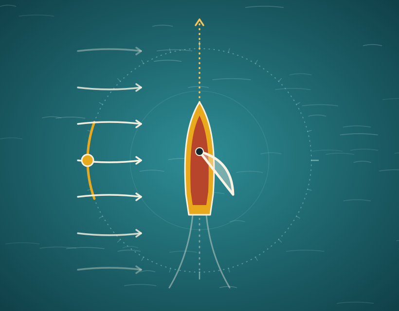

Bagian 1 dari 4
Layar
Menangkap tiupan angin dan mengubahnya menjadi dorongan.
Lihat bagian-bagiannya, lalu coba bagaimana arah angin mengubah geraknya.
Mulai menjelajah02 · Kenali Jong
Jong adalah perahu layar kecil tanpa awak yang dimainkan di pesisir. Di Batam, permainan rakyat Melayu ini masih hadir lewat lomba dan kegiatan masyarakat.
Pemain menyiapkan Jong, membaca arah angin, lalu melepaskannya di air. [PERLU SUMBER]
Berdasarkan Dinas Kebudayaan Kepri dan Dispora Kota Batam.
Foto berizin atau ilustrasi
Pemain melepas Jong di tepi pantai Batam, layar terkembang, air dangkal di depan. Rasio 4:3.
03 · Bagian Perahu
Pilih satu bagian di daftar, atau ketuk titik kuning pada ilustrasi.
Pilih bagian
Tiang
Lambung
Cadik
Bagian 1 dari 4
Menangkap tiupan angin dan mengubahnya menjadi dorongan.
04 · Angin dan Jong
Angin mendorong layar, dan posisi layar menentukan ke mana Jong bergerak.
Tiupan datang dari depan, samping, atau belakang.
Menerima dorongan sesuai posisinya.
Arah dan gerak Jong ikut berubah.
05 · Coba arah angin
Pilih dari mana angin bertiup, lalu lihat perubahan layar dan arah Jong.

Angin
Lurus ke depan
Pilih salah satu arah di atas untuk melihat penjelasannya.
Ilustrasi ini membantu memahami konsep, bukan menghitung gerak perahu sebenarnya.
06 · Nilai Budaya
Salah satu contohnya adalah Lomba Jong Batam 2019. [Isi dari sumber Dispora: penyelenggara, lokasi, dan cara lomba berlangsung.] Dari kegiatan ini terlihat keterampilan membuat perahu dan kebiasaan membaca angin yang dipelajari bersama di pesisir.
Foto kegiatan berlisensi
Peserta dan Jong di garis start Lomba Jong Batam. Sertakan nama fotografer dan lisensi.